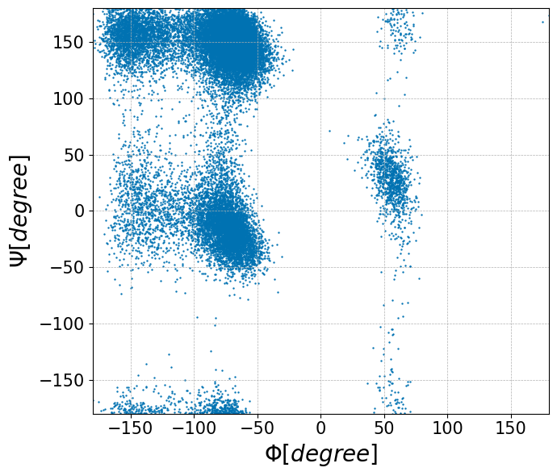
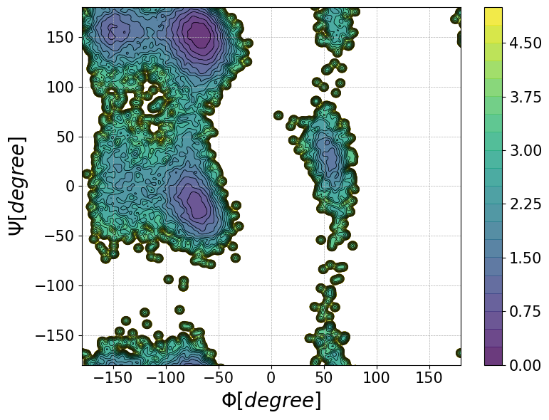

Free energy surface from MD data
using MDToolbox, PyPlot
PyPlot.plt.style.use("seaborn-colorblind");
ENV["COLUMNS"] = 110; #display width for MDToolboxt = mdload("data/md_alad/3_prod/run.nc")25000x22 TrjArray{Float64, Int64}
| 25.34 26.27 7.20 | 26.40 26.06 7.38 | … 27.66 24.28 1.80 |
| 24.75 24.72 8.90 | 25.58 25.42 8.84 | 28.27 22.61 4.44 |
| 24.47 22.00 5.86 | 25.17 22.73 6.27 | 29.75 23.57 1.87 |
| 23.57 26.11 6.03 | 24.51 25.66 5.71 | 29.66 22.81 2.70 |
| 26.32 23.52 7.24 | 26.54 24.44 6.70 | 29.91 22.20 1.51 |
| 24.21 22.59 6.21 | 25.26 22.75 5.96 | … 28.10 21.81 0.10 |
| 26.95 24.89 6.85 | 26.18 24.24 6.45 | 26.81 21.15 1.42 |
| 27.36 23.49 6.32 | 26.93 22.64 5.78 | 27.24 23.90 -0.74 |
| 27.12 19.64 3.78 | 27.86 20.26 4.27 | 23.79 21.29 0.84 |
| 29.50 19.76 5.16 | 28.64 19.65 5.82 | 26.38 21.90 0.19 |
| 28.54 19.49 6.72 | 28.40 19.95 5.74 | … 25.43 24.72 3.90 |
| 29.33 20.18 6.97 | 29.77 20.30 5.98 | 27.76 24.25 1.63 |
| 32.56 20.54 2.88 | 32.03 19.76 3.44 | 28.92 24.60 1.71 |
| ⋮ | ⋮ | ⋱ ⋮ |
| -1.05 -2.81 15.52 | -1.66 -2.27 14.79 | 3.70 1.55 12.25 |
| 34.05 32.72 14.18 | 33.53 33.56 14.62 | 37.93 36.87 11.40 |
| -1.27 33.18 12.34 | -0.27 33.61 12.28 | … 1.11 39.69 10.73 |
| -1.18 33.79 15.82 | -0.62 33.68 14.89 | 3.18 38.70 11.42 |
| 35.02 -3.69 13.89 | 35.49 -3.20 13.04 | 35.02 3.96 10.29 |
| 34.78 -3.02 14.48 | 33.77 -3.32 14.18 | 34.77 4.24 12.08 |
| 31.99 33.70 12.31 | 32.85 34.34 12.11 | 35.29 41.25 14.14 |
| 30.81 -2.43 12.38 | 31.81 -2.04 12.56 | … 35.48 2.87 14.05 |
| 30.95 -0.70 12.71 | 31.90 -0.67 13.23 | 35.19 5.86 15.29 |
| 31.37 -0.22 14.45 | 31.76 0.45 15.22 | 38.16 1.58 13.56 |
| 31.72 0.76 14.82 | 32.19 1.17 15.71 | 39.10 4.15 14.29 |
| -2.06 -0.18 15.60 | -1.91 0.63 16.32 | 5.14 3.89 14.39 |phi = compute_dihedral(t[:, 5], t[:, 7], t[:, 9], t[:, 15]);
psi = compute_dihedral(t[:, 7], t[:, 9], t[:, 15], t[:, 17]);
phi25000-element Vector{Float64}:
-65.90269553859062
-91.89979984268491
-47.7621904698176
-164.51294405466734
-158.66552870164284
-79.32733553727321
-74.10317756217691
-78.5835973452824
-76.68726929143479
-153.85903680522748
-79.38121914513528
-48.656395015167305
-69.25782034039702
⋮
-79.72782448566164
-64.01818284760004
-63.31297612678819
-137.09794430666201
-144.83214485800534
-156.44064848456972
-72.54439458978895
-77.14563641267912
-66.05171633864515
-55.903505167253
-73.65732591140954
-79.84791452844857fig, ax = subplots(figsize=(7, 6));
ax.scatter(phi, psi, s=0.5);
xlabel(L"\Phi [degree]",fontsize=20);
ylabel(L"\Psi [degree]",fontsize=20);
# detailed options (if your prefer to change details)
ax.set(xlim=[-180, 180], ylim=[-180, 180]);
ax.xaxis.set_tick_params(which="major",labelsize=15);
ax.yaxis.set_tick_params(which="major",labelsize=15);
ax.grid(linestyle="--", linewidth=0.5);
tight_layout();
savefig("free_energy_surface01.png", dpi=350);
grid_x = -180:1:180;
grid_y = -180:1:180;
pmf, grid_x, grid_y = compute_pmf(phi, psi, grid_x=grid_x, grid_y=grid_y, bandwidth=[2.0, 2.0], boxsize=[360.0, 360.0]);
KBT = KB_kcalpermol*300.0;
pmf = KBT .* pmf;
pmf361×361 Matrix{Float64}:
5.19818 5.16962 5.02327 4.58794 4.04907 3.57489 … 6.47349 5.93619 5.54744 5.30505 5.19818
5.9452 5.63961 5.08423 4.45461 3.89908 3.45391 7.32602 6.78707 6.39436 6.13416 5.9452
6.49204 5.76498 5.00436 4.33603 3.7889 3.36295 8.32093 7.77604 7.36103 6.99699 6.49204
6.68768 5.78588 4.98661 4.31534 3.77254 3.35226 9.39141 8.81221 8.27933 7.5816 6.68768
6.74538 5.86856 5.08184 4.41629 3.87486 3.45242 9.38433 8.80073 8.26792 7.5993 6.74538
6.50756 5.89514 5.2263 4.61043 4.08889 3.67019 … 8.32641 7.77198 7.33912 6.96244 6.50756
5.82914 5.52432 5.1344 4.71073 4.30916 3.95592 7.35515 6.80629 6.39255 6.08758 5.82914
5.08907 4.89863 4.67567 4.44443 4.24825 4.09256 6.53259 5.98585 5.5785 5.29322 5.08907
4.4589 4.32093 4.16798 4.01199 3.91002 3.89757 5.85882 5.31345 4.91004 4.63575 4.4589
3.96558 3.86695 3.7657 3.65345 3.58479 3.61328 5.33391 4.78952 4.38895 4.12257 3.96558
3.61363 3.5478 3.49472 3.42528 3.382 3.42584 … 4.9579 4.41424 4.01577 3.75529 3.61363
3.40485 3.36612 3.35809 3.33458 3.32002 3.37734 4.73084 4.18771 3.79078 3.53471 3.40485
3.34054 3.32368 3.35633 3.38096 3.40042 3.47411 4.65274 4.11 3.71421 3.46141 3.34054
⋮ ⋮ ⋱ ⋮
4.1432 3.7957 3.42435 3.12906 2.93673 2.84156 3.5596 3.77039 4.05656 4.25454 4.1432
3.89426 3.68533 3.4294 3.19634 3.04078 2.97687 … 3.77376 3.91104 4.02484 4.01809 3.89426
3.58222 3.51745 3.43849 3.32924 3.23847 3.20854 4.04214 3.98306 3.84268 3.68733 3.58222
3.29343 3.31364 3.39594 3.47037 3.50472 3.52292 4.21362 3.89431 3.59108 3.38209 3.29343
3.09196 3.1458 3.31501 3.54851 3.75422 3.83127 4.22214 3.75563 3.39722 3.17401 3.09196
3.00566 3.06935 3.2701 3.58074 3.90114 3.9819 4.20084 3.68804 3.31455 3.08674 3.00566
3.04423 3.10922 3.31751 3.64678 3.97237 3.95763 … 4.26112 3.73575 3.35713 3.12658 3.04423
3.21141 3.27493 3.48159 3.79824 4.04026 3.87689 4.43999 3.91013 3.52864 3.29575 3.21141
3.50966 3.57057 3.76957 4.04294 4.12123 3.80485 4.74724 4.21481 3.83108 3.59608 3.50966
3.94126 3.99755 4.17542 4.34153 4.17922 3.7457 5.18672 4.65231 4.26671 4.02985 3.94126
4.50712 4.54878 4.65267 4.57178 4.16056 3.67651 5.76121 5.22524 4.83809 4.59937 4.50712
5.19818 5.16962 5.02327 4.58794 4.04907 3.57489 … 6.47349 5.93619 5.54744 5.30505 5.19818fig, ax = subplots(figsize=(8, 6));
meshgrid(x, y) = (repeat(x', length(y), 1), repeat(y, 1, length(x)));
X, Y = meshgrid(grid_x, grid_y);
levels = 0:0.25:5;
ax.contour(X, Y, pmf, levels, colors="black", alpha=1.0, linewidths=0.5);
pos = ax.contourf(X, Y, pmf, levels, alpha=0.8, cmap=get_cmap("viridis")) # colormaps: viridis, plasma, inferno, magma, jet, hsv, terrain
cbar = fig.colorbar(pos, ax=ax);
cbar.ax.tick_params(labelsize=15);
xlabel(L"\Phi [degree]",fontsize=20);
ylabel(L"\Psi [degree]",fontsize=20);
# detailed options (if your prefer to change details)
ax.set(xlim=[-180, 180], ylim=[-180, 180]);
ax.tick_params(axis="both", which="major",labelsize=15);
ax.grid(linestyle="--", linewidth=0.5);
tight_layout();
savefig("free_energy_surface02.png", dpi=350, bbox_inches="tight");